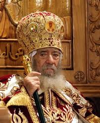

Tema 1: Islam, Filosofía y Religión
Reflexiones Iniciales
@ ferrín:
"El rechazo a lo que en Nicea se consideraba paganismo acabará llamándose islam."
La crítica hostil que se hizo a la paternidad de Dios acabó llamándose islam.
Narración retrospectiva: Hoy escribo lo que quiero creer que pasó hace
xtiempo.¿Qué es el cristianismo? Aquello en nombre de lo cual mataban los terroristas del IRA.
Que el año 622 fuera el año fundacional del islam es una noción de praxis musulmana: no hay ningún fundamento histórico para esto. Hay fundamento teológico para decir que la idea que defenderá el islam es una que ya estaba dando vueltas en el concilio de Nicea, a saber: ¿Cómo va Dios a tener hijos?
"El Niño Jesús nace en el pesebre de Belén y, con el tiempo, crece y lleva una vida normal. Cuando llega el siguiente 25 de diciembre, surge la pregunta: ¿Le deseamos 'Feliz Cumpleaños' o 'Feliz Navidad'? Esto nos lleva a reflexionar sobre cuánto tiempo debe transcurrir en una religión para que se establezca y se canonice un sistema fundacional."
Notas:
Relación entre Filosofía y Religión
La filosofía y la religión se entrelazan en la búsqueda de respuestas a preguntas fundamentales sobre la existencia, la moral y el universo. Mientras que la filosofía se esfuerza por encontrar respuestas a través del razonamiento y la lógica, la religión a menudo ofrece respuestas preestablecidas que se aceptan a través de la fe.
En este contexto, el islam, como religión, es visto como una respuesta a las preguntas planteadas por la filosofía.
El Concepto de Dios en el Islam
El islam tiene una relación profunda con la idea de Dios, similar a otras religiones monoteístas. Se argumenta que la existencia de Dios es conceptualmente evidente, al igual que conceptos como el honor y la vergüenza. Sin embargo, la forma en que se aborda el concepto de Dios puede variar dependiendo del enfoque filosófico o religioso.
Los Tres Islames
- Islam Religioso: Se refiere a la religión en sí, con sus prácticas, creencias y rituales.
- Islam Civilizatorio: Hace referencia al papel del islam como una civilización, destacando su impacto histórico y cultural. Este islam se desarrolló en torno al año 800, centrándose en Bagdad, y decayó alrededor del año 1923, con el surgimiento de la Turquía moderna.
- Islam Social Contemporáneo: Relacionado con la geopolítica y la identidad cultural en el mundo moderno. Aquí, el islam es visto más como una identidad que como una religión unificada.
El Concilio de Nicea
Es interesante señalar que en algunas reflexiones, el islam se considera como habiendo nacido en el Concilio de Nicea en 325 ec. Esto pone de manifiesto la complejidad y la interconexión entre la religión y la historia.
Conclusión
La relación entre el islam, la filosofía y la religión es compleja y multifacética. Comprender esta relación requiere un enfoque interdisciplinario que tenga en cuenta tanto las creencias religiosas como los desarrollos históricos y sociales.
El islam no es solo una religión, sino también una civilización y una identidad social en el mundo moderno.
Olvidarse del discurso sobre los orígenes, desarrollo y presencia del islam en el mundo. En otras especialidades se ha ido asumiendo los beneficios de las revoluciones científicas en otras ramas del conocimiento y a nadie se le ocurre, en países civilizados como los Europeos, plantear en una clase de biología que existen la corriente evolucionista y la creacionista. En otros países, como Estados Unidos, han mandado cambiar "Evolution of Islam" por "Development", porque algunos todavía no tienen muy claro lo de la evolución. Nosotros no podemos estar pendientes de estupideces.
Si en cualquiera de las otras religiones hay una cierta posibilidad de entender la cuestión desde la honradez científica, en el islam es completamente imposible porque parte de una falacia: de la falacia de un origen creacionista. Si una persona estudia los orígenes del cristianismo y plantea que una de las personas que puedan tener que ver con el origen del cristianismo (llamado Jesús el Nazoreo), otra que pudiera tener que ver con los orígenes del cristianismo llamada Pablo, sin que ninguno de los dos, en ningún caso, se pudieran llamar cristiano; entendemos de una forma sutil que el judaísmo está en la base de esa r-evolución de una cierta consideración religiosa judaica que a través de una fase compleja, lenta, azarosa de judeocristianismos, acabaría generando el cristianismo.
Bien, en cualquier libro de historia de las religiones se entiende la evolución, las causas históricas para la génesis de una nueva fe, un nuevo sistema religioso, menos en el islam.
En que, en cualquier libro, pirmer capítulo, vida de Mahoma, el desierto, la revelación, su mujer, el tío camellero... Todo lo que nos han contando sobre la historia del islam forma parte de una historia mítica del islam. Nosotros no tenemos ni la más mínima prueba científica de ninguno de los personajes recién citados. Ni la más mínima posibilidad de aval científico para decir que el islam surgiera en el desierto de un desconocimineto pleno de los alrededores, un entorno pagano que siempre se presenta (en toda la génesis cinematográfica del islam) y lo que en otros sistemas religiosos se puede estar explicando desde un pov histórico-crítico, en el islam no se está haciendo.
Nosotros, como esto no es una mezquita, aplicaremos el método histórico-crítico; como no es una iglesia, no denostaremos al islam; como no es una sinagoga, no bombardearemos a ningún musulm*n.
Tenemos que tener el cuenta que el sistema religioso que se denominó islam (desde fuera, porque nunca fue autónimo, igual que Jesucristo no tiene nada que ver con Jesús el Nazoreo[^1]).
^1 - Pensemos el islam en la misma olla, sartén, en que se está cociendo el mundo judeocristiano que llegará un momento en que se disperse, (identifique), narraicón retrospectiva (hacer que el pasado sea de otra manera porque desde el presente viene mejor que sea así).
El método histórico-crítico consiste en usar, para el análisis de los siglos VI, VII, VIII, la documentación de los siglos VI, VII y VIII. No en utilizar la documentación del siglo X para entender los siglos VI, VII, VIII.
No hay ninguna fuente árabe anterior a los años 900 o 1000. Dicho de otra manera, la narración retrospectiva del islam es la peor falacia cinematográfica que hay en la Historia de las Religiones, mucho peor a la del cristianismo o el judaísmo, en cuyos estudios ya se ha incorporado el método hco-crít. hace tiempo; pero en el islam se sigue manteniendo el creacionismo.
Ernest Renan (un francés que tiene una vida de jesús y una historia del jdmo y del crmo), decía que la diferencia entre los 3 monoteísmos es que el islam ya nació a plena luz de la historia. De tal manera que tenemos quién lo fundó, cuándo, el libro... Esto es una mentira.
- No hay posibilidad de hablar de un Corán como tal hasta el año 800.
- No tenemos la más mínima fuente histórica para nada relacionada con el profeta conocido como Mahoma ni con nada de sus alrededores.
- Es perfectamente comprensible la forja del sistema religioso llamado islam a partir de ese "entorno sectario" en ese que llaman los americanos el "melting pot" (crisol) que es el Oriente Medio de los siglos II-IX, en que todo está en permanente movimiento, redefinición, reubicación...
Desde los primeros momentos en que alguien quiso establecer un canon cristiano frente a un canon judío, el islam surgirá precisamente entre canon y canon.
Ciencia de las Religiones
Dios
Islam
Ciencias de las Religiones
"Ciencias son aquellas disciplinas que se dan en la universidad que no tienen que ponerse delante Ciencias de". De ciencia, lo que tenemos es un deseo de fingir que seguimos una metodología aséptica. No puede haber ningún tipo de objetividad, porque no estamos tratando con objetos.
Hay honradez, no objetividad. Giambattista Vico asimiló la verdad a lo inexplicable y las verdades a lo demostrable, decía que en el ámbito de las humanidades no podemos hablar de ciencia, de verdad, de objetividad, pero sí de honradez.
Las Ciencias de las Religiones son un intento, normalmente comparativo, de fundamentar lo que vamos a decir que es independiente a nuestras identidades religiosas, de género, etc. Que haya una honradez aséptica.
Partiendo de este intento difícil de honradez, si hay un libro sobre la vida de Jesús y está escrito por Benedicto XVI y hay otro sobre Jesús de Nazaret escrito por Antonio Piñero, y un libro sobre Jesús de Nazaret escrito por Fernando Bermejo, parece que el primero no puede considerarse material científico, porque está escrito por una persona interesada en que el contenido no sea verificable, sino verdad.
La ciencia honrada es cuando tratamos con lo verificable.
Dios
Dios existe igual que el honor y el patriotismo. A lo largo de la historia es evidente que es evidente que se creó un concepto llamado Dios, otro el Gusto por la mayonesa y otro la pasión deportiva. Conceptos creados por el ser humano pasan a existir. Pero si para creer en Dios yo necesito creer en las condiciones de posibilidad establecidas por los teólogos a lo largo de la historia (que dios creó al ser humano, que está mirándome ahora mismo para ver si hago el bien o el mal), si ese es el corsé, no creo en dios.
Las autoridades religiosas, Max Weber decía que más importante que la religión en sí es la figura del monopolizador de todas las fuentes de salvación. Yo no voy a esperar a que alguien me diga qué es pecado o qué no, ni quien fiscalice si puedo autodenominarme cristiano diciéndome que he de creer en la virginidad de María, el perdón de los pecados... Y tú quién eres para decirme lo que tengo que creer? Y lo que no?
El amplio margen mental que tenemos para las cosas que creemos y son completamente indemostrables e inverificables: cuando una persona dice "Te querré toda mi vida" está estableciendo unos criterios que cualquier persona científica sabe que son muy improbables, pero no importa porque hay una creencia inexplicable en ello.
Separemos lo que es el dios demostrable del dios que se impone desde los monopolizadores de todas las fuentes de salvación.
Esto es un cáveat para todos los debates futuros.
Islam
Realmente, ni siquiera la palabra nació como un sistema religioso diferente, sino que surgió como una forma de comportamiento.
Se parte de una apreciación inicial, sin que sepamos cómo ni dónde ni cuándo surgió. Sí surgió la idea de que no podía haber una justicia divina, un dios todopoderoso y magnánimo, si resulta que parte de un pueblo elegido. No hay justicia universal si sólo los de un grupito determinado nos vamos a salvar. Por tanto, qué es el islam? La apertura del pueblo elegido, la universaliación de la promesa. Hay una evidencia de la creencia en la verdad absoluta, una razón histórica y geográfica para creer en esas cosas (nos meteremos en por qué judaísmo, cristianismo e islam nacieron en Oriente Medio y no en Laponia ni en Canadá). Tener en cuenta que no hay un OVNI llamado islam, un creacionismo en que de repente un señor en una cueva recibe un mensaje y surge una religión nueva, esto es MENTIRA, es el cuento de las viejas. Es lo que se les cuenta a los niños cuando se les habla del ratoncito Pérez. No son verdad ni mentira, puesto que sus efectos tienen una huella. Lo que es mentira es que haya una trascendencia de esos conceptos más allá de la creación del ser humano.
Recopilación de la prenotanda.
- Trataremos con verdades demostrables.
- Las Ciencias de las Religiones no son verdaderas ciencias. Son aproximaciones honradas al conocimiento de una visión del mundo, de una cierta orfandad de comprender que haya algo más.
- El islam surge por la necesidad de ampliar el pueblo elegido.
(El cristianismo introduce el concepto de universalidad de la fe y no de la sangre. No hace falta seguir una serie de preceptos para ser cristiano, sino tener una fe determinada, pero introduce el concepto de que Dios tiene hijos. La mayor parte de la gente que aceptó la universalidad del islam no podía aceptar que dios tuviera hijos como Júpiter o como Osiris, consideraban eso un paganismo realimentado. Por tanto la pugna será, dentro de que hay un judeocrmo que va a configurar un crmo, hay un jdmocrmo que teóricamente debería llamarse un islamocristianismo, porque están partiendo de una apertura del pueblo elegido para todos. Sin embargo, se romperán a la vez porque no pueden creer que Dios tenga hijos).
El Corán está completamente lleno de textos cristianos en que se acepta que hay una verdad en la Biblia pero no sé comprende a qué c*ño viene que Dios tenga hijos.
Que el año 622 fuera el año fundacional del islam es una noción de praxis musulmana: no hay ningún fundamento histórico para esto. Hay fundamento teológico para decir que la idea que defenderá el islam es una que ya estaba dando vueltas en el concilio de Nicea, a saber: ¿Cómo va Dios a tener hijos?
En Nicea, la gente acude a crear un consenso determinado y cuando se acepta por imposición el credo Niceno el resto de la getne quiere seguir siendo cristiano pero no acepta la equiparación de un mortal con dios y mucho menos que sea su hijo: ahí nace el islam.
Las tres religiones son tres matizaciones (si ** apuráis, la más antigua es el islam). Imaginemos que esto fuera un sistema religioso a granel, y el gran concepto estrella es que solo hay un Dios (un concepto eminentemente griego < la idea de lo uno, la unicidad, [hasta pitagórico!]). Lo uno, lo bueno y lo bello junto - Plotino. La primera filtración de este monoteísmo a granel sería el islam, porque parte de que hay un solo dios y todos somos siervos suyos. En una segunda filtración, otro grupito dice "No todos, solo unos pocos", o sea, el judaísmo. En otra filtración, otro grupo dice "Y por cierto, este de aquí es hijo de Dios". Desde un pov no-cronológico, ucrónico-filosófico, conceptualmente la creencia monoteísta más antigua sería el islam.
Religion
It's like history class, without the facts.
Verdad
No nos interesa. La angustia de Abraham es una historia de las tres religiones monoteístas. Parte de que hay una necesidad geográfica para el monoteísmo.
Hay un libro de los años 50 de Wittfögel, Despotismo oriental. Plantea que el Estado surgió en unas geografías determinadas.
Ferrín se acerca a él para explicar que el monoteísmo, aquí el islam, surgió también de una geografía determinada.
Wittfögel decía que es muy fácil vivir con tu familia en un bosque suízo. Tu mujer, tus niños, unas mascotas, gallinas, hacha, madera, agua... Puedo plantear una supervivencia familiar; hasta que llegue el pueblo de al lado, nos arrase y partimos de cero. Pero lo normal es que una persona considera que sus iguales pueden ser sus enemigos, no la naturaleza. Si me dejaran solo en la naturaleza, la naturaleza es madre. Esto está en todo el imaginario colectivo incluso en la fundación de EEUU: Jack y las manzanas... (cuentos en EEUU/Canadá): la posibilidad de un niño que puede ir por ahí comiendo sus manzanas y la naturaleza es buena y él solo tiene que huir de los malos.
En Oriente Medio, la naturaleza es madrastra mala que te putea. La naturaleza, en el Oriente Medio, en el desierto, en ese clima áspero, es difícil pensar que hay alguien regalándote algo. En Despotismo oriental, Wittfögel dice que el Estado surgió en estas condiciones.
Hacha y familia en suíza: hay un río, pescas. Hay una crecida. Si eres listo, puedes hacerlo desviarse, etc. Ahora bien, qué causalidad, dice Wittfögel, que el Estado, las grandes maniobras de manipulación de la voluntad de mil(lon)es de personas, surgiera en torno al valle del Nilo, el valle del Tigris-Éufrates, el Ganges o Yangtsé. Dice que son 4 situaciones en las que, para que uno coma, un millón de personas tienen que desviar ese río. Para que un millón de personas devíen ese río mediante su trabajo conjunto, tiene que haber 10.000 personas con un látigo. Para que 10.000 personas tengan un látigo en la mano debe haber 100 personas que les paguen por hacerlo y 1 que mande sobre ellos. Wittfögel dice que el Estado surge evidentemente como un despotismo, como una dictadura. Nadie vota en Egipto "Venga, hacemos unas pirámides". Es imposible plantear que el origen del Estado pueda ser a la medida de la democracia griega. La democracia griega sirve para un pueblecito donde solo los hombres sabios tenemos derecho al voto y el resto nos hace caso. La democracia es muy fácil en pequeñito.
Las coordenadas geográficas que nos sitúa Wittfögel para el origen del estado, relacionadas, según él, con el origen de la democracia, con el proyecto de una sola persona, en un primer momento se asociará también a la necesidad de creer en algo: "Tenéis que seguirme y os daré un premio", "Me ha dicho fulano que seré su interlocutor", etc.
Jan Assmann, al hablar de la inquietud religiosa del egipto faraónico, plantea que Akhenatón "El norte y el sur unificados; el dios del norte y el del sur son mis dioses y yo soy dios con ellos", está generando la divinidad como bandera. Una ideología de una disciplina utilizando la manipulación de la verdad.
Teniendo en cuenta la noción de Wittfögel de cómo en Oriente Medio surge el estado, es evidente que fuera en OM donde surgieran esas religiones monoteístas de un dios todopoderoso que va a tener una evolución.
La biografía de Dios es interesantísima, y no tiene mucho que ver con la secuencia de libros que nos dicen a nosotros que tenemos que seguir (AT, NT, Al-Q, Jesucristo Sueperstar...). La idea de dios va dando vueltas en esos libros guadianeando. Leyendo el AT vemos muchas concepciones de dios, igual que hay muchas en el Corán.
Por poner un ejemplo, Carl Jung analizó muy bien el libro de Job. Dice que ese Dios no tiene nada que ver con el Dios evangélico. El dios de Job es un elefante pisoteando hormigas. Jung plantea que ese Dios elefantiásico que no tiene en cuenta el diálogo con el ser humano; ese Job que no hace más que sufrir el pisoteo del Dios en su cerviz, no tiene nada que ver con el Dios de Jesucristo Superstar, que es un colega de parque que baile, es amigo, etc.
Es evidente que esta verdad única ha evolucionado en su atrezzo, en su disfraz, en su consideración. Jung habla, sin decirlo directamente, de que inventamos un Dios a la medida de las necesidades de la época. Por tanto, volviendo a Wittfögel, en el momento en que un solo río nos da la vida y el control de las crecidas de ese río requiere un solo poder dictatorial para que un pueblo determinado modifique su curso, la idea de la unicidad de todo requerirá también un solo Dios o por lo menos la idea de un dios por encima de todo lo demás. La idea de Dios es una idea lógica, viene a decir Jung, dentro de un planteamiento de la naturaleza como madrastra: no podemos confiar en la naturaleza.
Apología
La mayor parte del material que usamos para entender los sistemas religosos es material apologético. Nosotros entendemos durante mucho tiempo que el estudio de determinadas lenguas se incrementó precisamente para conocer la voluntad de dios.
El desarrollo de ciencias completas surgió precisamente para comprender unos libros que desarrollaron un conocimiento que empezó siendo hermenéutico para cmprender los intríngulis de lo que Dios quería decir.
Detrás de todo el mito de la verdad, existe toda una industria intelectual absolutamente necesaria para comprender el momento en que estamos.
El ejemplo de Wittfögel: el creyente, a lo largo de la historia, no es un imbécil que no se haya enterado de que no hay una verdad absoluta. Es una secuencia de maestr@-alumn@ que, a lo largo de la historia, podrá ir comprendiendo otras explicaciones de lo posible más allá de la creencia, al fe en lo imposible.
Haremos caso a una apología concreta sabiendo que es la narrativa, el género literario lógico de expresarse las religiones. Pero también la denostación.
Denostación
La mayor parte de lo que sabemos del maniqueísmo viene de Agustín de Hipona y tantos otros teólogos padres de la iglesia que para denostar la religión que no era la suya recopilaban una serie de textos.
A través de la apologética y la denostación podemos comprender todo lo que significó una religión a lo largo de la historia, desvinculado completamente de la verdad o mentira de sus fundamentos. No es imprescindible partir del conocimiento de Dios para comprender el desarrollo histórico de una religión. Pero no caigamos en lo tercero, la fenomenología.
Fenomenología
Como parte de la filosofía no tiene ningún problema: el fenómeno es lo que se presenta ante mí y la forma que yo tengo de abordar el conocimiento o la percepción.
Pero en el momento en que pienso que no hay un gato, sino cada gato. Que no hay un islam, sino cada islam; que mi percepción de la realidad es LA realidad.
Cultural Studies
Concepto más peligroso todavía. Surgió en EEUU como si fuera una verdad absoluta, la teoría de los Cultural Studies y su exageración es lo que cualquiera puede escuchar en cualquier podcast o leer en cualquier blog. Como un actor de Holliwood diciendo que no tiene sentido que un director blanco dirija una película de negros. Que la única posibilidad de entender el mundo de los afroamericanos es a través de Spike Lee. Entonces, si los CS significa que hay un panal, compartimentos estancos entre las posibilidades de comprender la realidad, derivadas de la percepción fenomenológica, entonces caeremos hacia el esencialismo:
Esencialismo e Identidad
O sea, pensar que las cosas son porque siempre han sido, pensar que porque siempre han sido son la verdad; pensar que mi identidad no es lo que yo quiero ser sino lo que me imbrica toda mi circunstancia personal.
"Yo no puedo más que ser cristiano porque nací en España, porque hablo castellano, porque, porque, porque..."
Esto son justificaciones que niegan toda posibilidad de cambio de identidad. Una de los problemas que tenemos en las sociedades contemporáneas es la idea de las identidades exclusivas, la necesidad de elegir lo que yo voy a ser.
"Yo quiero ser la I del colectivo LTGBI, pero matizada porque la negritud para mí es fundamental, pero matizada porque para mí el islam es fundamental, pero no cualquier islam sino el islam chií septimano..
¿A qué estamos jugando? ¿Quién se va a creer que la identidad sea esencialista? ¿Cuántos muertos tiene que haber en este mundo para que comprendamos que aunque mi abuelo muriera en el campo de Auschwitz para matar yo a un niño ahora? No me asiste ninguna razón histórica. ¿Cómo es posible que yo entienda la religión desde el esencialismo identitario vertical (a lo largo de la historia) y no desde mi comportamiento que es el que va a generar la posibilidad más interesante de una religión (la parte ética)?
Los Cultural Studies son la peor forma de comprender el mundo porque los estudios humanos no pueden ser estudios exclusivamente culturales, entendiendo cultura como una identidad esencialista relacionada con la forma en que a mí me pueden gustar hombres/mujeres, rezar, o el tono de mi piel.
¿Simbolismo?
Sansón es un joven judío fuerte, valoroso, honrado, que se casa con una harpía filistea (palestina). El pobre judío Sansón es seducido por esta harpía que querrá acabar con él, pero sólo se puede acabar con un hombre tan fuerte acabando con su secreto. El secreto, concretamente, es que su fuerza reside en su cabellera.
¿Existieron Sansón y Dalila?
Lo normal es decir que es literatura, que hay un cierto simbolismo de comportamiento ("No te fíes de las mujeres"/"No te fíes de los filisteos"/"No seas tan tonto ni tan fuerte y dedícate a estudiar"...)
Lo importante es que en el original hebreo Sansón es Šīmšwn, y éste es el astro Sol, mientras que Da-Laila (לַיְלָה) es la noche. ¿Qué hace la noche con el sol? Le corta los rayos, la fuerza, los cabellos. De tal manera que el simbolismo literario de Sanón y Dalila nos permite comprender el ciclo del día-noche antropomorfizando la realidad para que así la podamos entender desde un punto de vista más cercano, más literario.
¿Existieron Sansón y Dalila? Sí, existen cada día, cada vez que se pone el sol.
Normalmente, éste es el aspecto salvable de cualquier método histórico-crítico de una fuente religiosa: entender qué quisieron decir con esto, no qué quieren que yo crea. Olvidemos la moto que nos están vendiendo, intentemos comprender la función y la operatividad de cada una de las piezas de la moto.
La religión no es de tontos, la religión es de gente interina intelectualmente. Esto lo sabemos a ciencia cierta hasta el momento en que bla bla bla bla.
En La gaya ciencia (1882) Nietzsche plantea que Dios ha muerto. Ojo: si vamos a jugar a simbolismos, Nietzsche no mata a Dios, se lo encontró muerto. Dice que ya no tiene ninguna operatividad, que la fe, la necesidad de que esta vida tenga un sentido, eso es de niños pequeños. Dice "Creer en Dios es como aferrarse a la teta de la madre", no hay universo más allá de esa fuente magnánima de bien y de alimento, pero hay un momento en que eso no funciona.
Desde el punto de vista de Spinoza, tiene una explicación más científica incluso. En su idea, en Deus sive Natura (1670), sólo podría creer en un dios que funcionara como la naturaleza. Aplacemos la decisión de si existe o no, pero si los manzanos dan siempre manzanas, en invierno llueve y en verano sol, parece que hay un orden natural. Este orden natural parece sugerir que yo no puedo hacer lo que me dé la gana, que no existe tanto el libre albedrío; que estoy limitado por una circunstancia ajena que sigue un orden concreto, al que podemos llamar Dios. De ahí a crear el universo en 7 días ya hay más conflicto. Pero, puestos a salvar los muebles, a aferrarnos a algo, hay un orden del que yo no me puedo sustraer.
Mateo 27:46
περὶ δὲ τὴν ἐνάτην ὥραν ἀνεβόησεν ὁ Ἰησοῦς φωνῇ μεγάλῃ λέγων,Ηλί Ηλί λαμά σαβαχθανί;
τοῦτ᾽ ἔστιν, Θεέ μου θεέ μου, ἱνατί με ἐγκατέλιπες;
¿Qué diferencia hay entre esto y Nietzsche? O sea, que ambos hombres se den cuenta de que Dios los ha abandonado, que ya no está.
Dicho de otra manera, debemos tener un respeto reverencial a todo lo que implica la reflexión sobre la religión, pero debemos buscar el valor simbólico de las verdades religiosas, no la forma de que la ciencia se pliegue a la realidad de la fe.
La religión es una cuestión de gente inteligente.
Jesús es el protagonista del Corán. El Corán es una defensa a ultranza de que Jesús no es hijo de Dios aunque sea hijo de María. Es fundamental comprender a Jesús para comprender el Corán. Nunca lo comprenderemos si lo abordamos como se ha hecho desde un punto de vista clásico: el desierto, los genios, el profeta, el camello. Mahoma no aparece en el Corán, aparece Jesús. El Evangelio Apócrifo por excelencia es el Corán, que mantiene elementos narrativos de 6 o 7 evangelios apócrifos que rondaban por la época; porque mantiene la milagrería de Jesús que se quita en el NT.
No hay islam sin Jesús. El primer texto que se puede calificar de musulmán no es un texto islámico. Musulmán es de fe, islámico es de cultura. Pero en la Cúpula de la Roca, actualmente en Jerusalén, en los primeros textos que hay, que pudiéramos mantener como textos de lo que después será el Corán, solo dice "Solo hay un dios, no se puede asociar nada a él". Y, en concreto, "Ni ha engendrado, ni ha sido engendrado". Dios como fuerza única del universo, y un Jesús descendido al rango de exclusivamente profeta para comprender el nuevo cristianismo que se entenderá después como islam.
Un Dios único de tres religiones funcionando a la vez y un islam que se especificará en ese maremagnum de creencias.
No profeta, desierto ni camello.
Monoteísmo
Ab-dallah: siervo de Dios
El Corán dice "Nosotros tenemos a Dios más cerca que nuestra vena yugular y nos va a marcar cada uno de nuestros acontecimientos".
A nosotros nos salvan nuestros actos, no la fe heredada (-> este será un debate muy prolífico en la Reforma).
El islam es una religión plenamente sincrónica en términos históricos, horizontal. A mí me castigan y me salvan mis actos, no haber nacido en esta familia, haber creído esto o lo otro, ni ser del pueblo elegido.
"No tengo el más mínimo poder frente a Dios, no soy nada para él".
La iconoclasia del islam, heredada del judaísmo, es que no representes a Dios.
Es cercano porque ve todo lo que yo hago. Es Hacienda.
Socio
El siguiente estadío. Es el elemento judaico. Ya no soy siervo de Dios, sino que tengo la capacidad incluso de escucharlo (Moisés escuchaba la voz de dios). En el Moisés coránico, fundamental, veremos que no solamente escucha a dios sino que quiere verlo y cae fulminado y muere por eso (luego resucita, de hecho la resurrección que hay en el Corán es la de Moisés, no la de Jesús).
Hijo
Último estadío en el viaje del acercamiento a Dios. Este es el cristianismo, que plantea que Dios tuvo un hijo.
Son estos tres grados de percepción los que separarán a los tres monoteísmos; no una historia absurda familiar de uno que se lleva mal con otro y tienen una conquista... Eso es una imbecilidad, no hay ningún fundamento histórico más que desde el punto de vista simbólico.
Orientalismo: sus tres grados
Es muy difícil hablar del islam hoy sin caer en dos topicazos.
- La autenticidad plena del orientalismo pictórico del XIX
- El orientalismo del nuevo antisemitismo antimusulman occidental (el musulmán es un tipo que tiene un Corán y grita)
En E. Said, él se queda en los dos grandes estadíos (1 y 2) de los 3 que hay:
Orientalismo cognitivo: traducir
Intentar comprenderlo sin ideas previas.
A lo largo de todos los siglos de relaciones tritresquiales unos han ido intentando defender lo suyo, atacar lo ajeno, etc. Esta idea de orientalismo cognitivo sería una profesión: intentemos entender este mundo porque es ajeno a mí. Parte (v) de que oriente es ajeno;
El primero es el más honrado: puesto que no lo entiendo, lo voy a intentar conocerlo.
Orientalismo estético: come, reza, ama
El más conocido a lo largo de nuestra historia, sobre todo últimamente. Aquí alguien quiere comprenderse a sí mismo y no se va a Lisboa, se va a la India. Por eso "come, reza, ama". El rollo fenomenológico de "Me compro una sandía, me pongo unas sandalias y me dejo barba y ya he comprendido el islam". Ese orientalismo estético es más peligroso aún que el final.
Yo puedo hacer dos cosas para entender el islam, estudiarlo o irme a Marrakech, comprarme unas babuchas y fumarme un porro en la plaza. La mayor parte de la gente que habla en nombre del islam en Europa o EEUU lo que ha hecho ha sido fumarse un porro en la plaza de Marrakech, exactamente igual que pasa con el budismo, el hinduísmo, etc. Es el promebla esteticista, fenomenológico del acercamiento a las religiones. Es nuestro rollo de asimilar lo fenomenológico a lo cultural.
Orientalismo mimético: taxidérmico
Disecar al animal.
Teniendo una percepción agresiva del islam, es decir, "el islam es pura violencia", mi única respuesta al islam es mediante la violencia. Es el paradigma de la cruzada, el paradigma del choque de civilizaciones. Es no entrar en la consideración ninguna de cuáles pueden ser los fundamentos de esa cultura: simplemente me agrede y agredo.
Tenemos al bloque, a la esfera cerrada del islam, y solo podemos empujarla lejos de nuestra puerta. Solo podemos competir con su violencia mediante la violencia: yo me veo en el enemigo: el enemigo en el espejo.
De los tres el más peligroso puede ser el estético, porque uno es un intento de acercamiento y el otro de alejamiento, pero en un momento determinado simplemente genera un alienamiento: no tener que ver nada con el otro planeta. Mientras que el central es muy cargante, porque plantea un acercamiento a los textos sagrados del islam desde una verdad poética perdida para siempre en Occidente que es lo que peor nos puede venir a la hora de comprender un islam que, al fin y al cabo, está mucho más cercano a nuestras fuentes culturales que lo que podamos comprender a priori.
Nicea, 325.
Aquellos cristianos que acudieron desde los confines de la cristiandad a defender que Dios, el ES y Jesús no son iguales, aquellos tenían al islam en su forma de ver el mundo. Cronológicamente no es islam, conceptualmente sí.
Steven Wasserstrom
El túnel de Oriente Medio (ss. II/III-IX). Entran dos religiones y salen tres. Quiere decir que no ha habido ningún elemento ajeno a todo lo que estaba dentro, simplemente las cartas monoteístas empiezan a barajarse de nuevo y donde había dos religiones acabará habiendo tres.
Wasserstrom plantea, a través de Eliade, Sholem, etc, que convirtieron lo slibros religiosos en su propia religión (un poco yoga de 5 a 7). "Tener que rezar para comprender una religión", o sea, generar una religión a partir de las Ciencias de las Religiosas.
Nosotros distinguiremos muy bien la cultura islámica de la civilización musulmana, y ambos del mundo árabe, que no tiene nada que ver: hay árabes judíos, cristianos, ateos...
Epigenética del islam
Las cosas no surgen en un contexto, sino de un contexto.
En todos los libros hay una confusión entre los mitos fundacionales y lo verdaderamente falsable, lo verificable, lo reseñable históricamente.
La idea de ¿Cuál es el contexto en que nace el islam? La arabia preislámica, música oriental, canto de oración, camello, palmera...
Esto es orientalista. El poder acuñar una imagen de lo ajeno en que no tienes que intervenir y que no tiene que intervenir en ti, más que para un cierto enfrentamiento.
La epigenética propone que no es que haya un contexto en que nace el islam, sino que de ese contexto, de esa puesta en escena, el islam nace en tanto que purificación, modificación de un judeocristianismo concreto que aceptaba la figura de Jesús como profeta (el sujeto central de la narración coránica) pero no acepta que sea hijo de dios. Por tanto, si tenemos que situar epigenéticamente al islam en un contexto del cual nace, nacería de las diatribas conciliares/sinodales (eran sínodos de obispos) del cristianismo formativo en el cual se mantuvo la discusión, si se quiere, bizantina de si Jesús es hijo de Dios; de si la persona de Jesús es la misma que la de Dios; de si hay tres personas y una sola sustancia; o tres sustancias en una sola persona.
Cuando Agustín de Hipona en el 400 plantea de modo poético, analizando el cristianismo, que lo mismo es el dedo que tañe el laúd, la cuerda del laúd que es tañida y el sonido que surge, para hacer ver que de una nota musical tenemos la autoría: el dedo, el instumento: la cuerda, y el sonido: la nota. Usa esto para explicar la consubstancialidad (la homousía), la misma naturaleza del hijo con respecto al padre. Lo hace de este modo simbólico para hacer ver que hay una conectividad, una necesidad de explicar esa unicidad de todo, ese monoteísmo extremo, que solo hay una fuerza generadora de creación e intervención, una sola fuente. Si lo hace en el año 400 es porque todavía necesita estar explicándolo. Esto es:
Si en el año 400, Agustín de Hipona, PdI, necesita el envoltorio simbólico del laúd para explicar la unicidad de Dios, incorporando la posibilidad de que tenga un hijo, entonces es porque es un tema controvertido. Todo tema controvertido está eliminando desde una ortodoxia una heterodoxia que no lo acepta. Y en esa heterodoxia, en ese judeocristianismo periférico, en ese cristianismo judaizante por aceptar la ley, por incorporar la Biblia hebrea según el canon que se aceptó que formaría parte del canon cristiano (en contra de algunos autores de su época, como Marción, que dice "¿cómo va a ser el dios del cristianismo el dios vengativo del NT?"). En esta creación humana, en esta polidoxia, las polidoxias vencedoras serán llamadas ortodoxias y las vencidas heterodoxias. Esto es lo que constituye exactamente el contexto, el escenario, la tramoya en que surgirá el islam como heterodoxia a medio camino entre un judaísmo ortodoxo que plantea que evidentemente no ha venido el Mesías, que evidentemente Jesús no es ni rey de Israel ni hijo de Dios; y un cristianismo que dice que se pliega el tiempo, que vino Jesús, que resucitó por nosotros; que somos salvos; que es hijo de Dios; hermano nuestro.
En medio de esas dos ortodoxias, que ya no se miran entre sí sino a sí misma, en torno a la cual hay una serie de periferias heterodoxias; ahí, en todos esos márgenes que fueron polidoxos (que fueron posibilidades, pero al surgir ortodoxias se convirtieron en heterodoxias), en esa parte de atrás del camino, surgirá el islam.
Esta es la epigénesis del islam como sistema religioso monoteísta que plantea que solo hay un Dios, que Jesús es su profeta, que nació de una virgen llamada María; que nació en un contexto perfectamente reconocible en los textos canónicos y extracanónicos de la época y que poco a poco irán arabizándose unos textos concretos que acabarán constituyendo la colección coránica (CC). En esta CC, que recopila de aquí y de allá (por eso hay que comprender el islam desde el judeocristianismo y no desde la mezquita), son perfectamente detectables:
-
Escritos apócrifos cristianos como el Evangelio del Pseudo Tomás (Infancia de Jesús), el Protoevangelio de Santiago, el Evangelio árabe de la infancia (aka Pseudo Juan), el de María Magalena; estará en gran medida, en algunos rincones del Corán, el Evangelio de Judas.
-
La pseudoepigráfica: una serie de textos abandonados, desdeñados por el canon judaico. Habrá una serie de leyendas de Abraham que no se incorporan al canon judío ni al cristiano pero que aparecerán colateralmente en el Corán. Las historias de Abraham visitando a su hijo Ismael, cuando la Biblia simplemente desdeñó a Ismael a favor de Isaac porque era el hijo de Sara y no el de Agar. Ese Abraham visitando a Ismael y a su madre Agar buscando agua en el desierto, de las tradiciones rabínicas de los siglos III y IV de nuestra era alimentarán narrativamente al Corán.
Por tanto, la primera gran idea de hoy será: la epigénesis del islam es la forja de un nuevo sistema religioso proveniente de (y no simplemente con) un contexto determinado, en torno a un libro que a la vez está recopilando todas esas heterodoxias.
Un evangelio apócrifo es una narración """fiable""" históricamente sobre la vida de Jesús pero no contemplable desde un punto de vista oficial o religioso. La Iglesia desdeñó una serie de textos, editándolos como textos históricos (la propia BAC es la que tiene editada la mejor colección de ev. ap.) en los cuales hay problemas para la doctrina cristiana, por ejemplo:
- Un niño Jesús que hace pajaritos de barro, les insufla vida y los echa a volar.
- Un Jesús que se enfada con un amigo y lo mata o lo resucita (porque es todopoderoso).
- El niño Jesús que no hace caso a sus padres...
Toda la milagrería de la infancia de Jesús será considerada como textos con cierto valor histórico pero no incluible en el canon de la Iglesia Católica. Por tanto,
un evangelio apócrifo es un relato sobre la vida de Jesús de cierta importancia histórica pero de nula trascendencia religiosa. Entonces, el Corán es un evangelio apócrifo,
porque incorpora elementos de la infancia/vida de Jesús que desdeñó la Iglesia; incorpora elementos de la extrema definición física de la virginidad de María, por los que el Evagelio pasa de puntillas y que el Corán analiza clarísimamente.
Es imposible comprender el Corán sin haber leído antes las colecciones judías, cristianas y las colecciones desdeñadas por el canon cristiano llamadas apócrifas/pseudoepigráficas, muy en concreto los textos de corrientes judeocristianas en torno a las comunidades ebionitas y muy en concreto las elcasaítas, cuya literatura es conocida como la literatura pseudoclementina y en cuya colección/redacción está el modelo que irá siguiendo la CC.
Los tres islames
El islam: sistema religioso
Nació como apertura del pueblo elegido, como consideración de que hay una soberbia interpretativa de determinadas comunidades (los judíos) que planteaban la existencia de un pueblo elegido y un pacto con Dios.
La apertura de los muros que ya había iniciado el cristianismo, esa universalización de la alianza, haciéndola depender de una fe y no de una forma de comer o de una raza o sangre o familia determinadas (el gran salto del helenismo cristiano) sin aceptar que los dioses tengan hijos porque eso es cuestión de panteones paganos como el griego, latino o egipcio.
Por tanto, en la diatriba iconoclasta de Bizancio (cristiana en tanto que rechaza las imágenes porque no quiere parecerse demasiado a la imaginería pagana) en la Antigüedad Tardía, los judíos hacen suyo ese rechazo iconoclasta. Después se le dará la vuelta y se aceptará con toda su panoplia folclórica en todo el Mediterráneo (la imaginería del cristianismo), en ese rechazo del carácter pagano de las imágenes está también el rechazo a la sustancia pagana de la divinidad, sustancia pagana que se nos ha mostrado en toda la mitología griega como dioses teniendo hijos. Y en Oriente Medio, el anacoretismo, que no aceptó Nicea, que son conscientes de los pecados de Calcedonia del 451... en esos avances hacia la paganización de una fe monoteísta bajo la forma de dioses teniendo hijos, en ese rechazo periférico hacia las imágenes y la consideración de la paternidad de Dios está la origen de este primer islam con minúscula.
El Islam: civilización
Igual que Cristiandad se escribe con mayúscula. Hereda al Imperio Romano y al Imperio Persa porque son las dos grandes civilizaciones de guardia en la Antigüedad Tardía, pero no porque las haya derrotado. Es más, es importante recalcar que el Islam no crece porque se expanda por invasión o por conquista.
No sabemos nada sobre los orígenes del Islam en materia civilizadora más que a partir de que puede hablar por sí mismo en torno al 800 en Bagdad, fundada a medio camino entre el Imperio Bizantino y el Persa.
[00:21:43]
Esclarecemos que el islam no se expande por conquista por evitar aplicar en historia un criterio religioso-teológico. Un teologuema es, a falta de una prueba científica, elevar una creencia al rango de demostración científica. No hay absolutamente ninguna crónica árabe de los años 600-700 que pueda demostrar una conquista determinada.
Sí tenemos crónicas datadas desde el 550 hasta el 750 (terminando con la biografía de Juan Damasceno, que no tiene ni idea de que exista nada llamado islam ni nada llamado Corán en esa altura; sin embargo, cuando googleamos "Juan Damasceno" parece que habla del islam: problemas de traducción, controversias filológicas muy interesantes).
Este segundo Islam es la calma después de la tormenta, el fin de la disputa entre Bizancio y Persia. Todo el carácter bélico que pueda expresarse en todas las crónicas responde al enfrentamiento entre esos dos imperios. Cuando ambos han sido derrotados y desgastados surgirá, de los pueblos yuxtapuestos de OM, una cierta civilización basada más en una cadena de ciudades comerciales y menos en un centro y una periferia. Esta será la clave de este segundo Islam-civilización: el comercio.
Este Islam que se expande por todo el Mediterráneo no invade, sino que mantiene estas mismas lógicas bélicas de la Antigüedad Tardía. Llegará un momento en que sea la civilización de guardia de la Edad Media, ahora traducido todo el legado grecolatino, habrá avanzado en materia científica mucho más allá de donde lo dejaron los griegos; habrá avanzado en materia de urbanismo, sociedades y derecho más allá de lo que lo hicieron los romanos/bizantinos; y llegará un momento en torno al XV en que se eclipsará porque Europa toma el relevo de esa civilización de guardia. Esa Europa que circunvalará África, que puenteará el comercio en el cual se basaba la civilización del Islam provoca ese escurecimiento del segundo Islam, que no levantará cabeza hasta el s. XIX con la invasión napoleónica de egipto y el pistoletazo de salida del colonialismo. Colonialismo que forjará una dualidad entre la metrópolis y las tierras árabes e islámicas conquistadas, donde surgirá prácticamente en el XX el tercer islam.
Islam
Este ya no es un islam internacional, es nacionalizado, está asociado a cada uno de los países que se irán creando de las ruinas del colonialismo y no podemos establecer ninguna conexión ocncreta de herencia entre la religión (islam 1), la civilización (islam 2) y las sociedades musulmanas contemporáneas (islam 3), pero los 3 interesan en un módulo de islam; los tres tienen tres formas de entender un mismo fenómeno que podemos definir como el islam en general, con esa tríada.
Separaremos la religión-islam (musulmán), la civilización-Islam (islámico) y la sociedad contemporánea (global: islámica - religioso: musulmán).
- Cuando nos refiramos a la religión del islam, su adjetivo será siempre lo musulmán.
- El musulmán, la musulmana, el rito musulmán.
- Cuando nos refiramos a la cultura, que sea islámico.
- El arte islámico, la arquitectura islámica, los manuscritos miniados en las tierras del Islam.
- Cuando hablemos de las sociedades musulmanas contemporáneas no estableceremos una línea directa de causa-efecto entre religión-cultura y civilización contemporánea, sino entenderemos tres cosas diferentes.
Prenotanda
La antigüedad conectada
Fernando Wulff Alonso es Catedrático de Historia Antigua de la Universidad de Málaga: sobre los viajes que se hacían desde el cuerno de África de los griegos hacia la India. Unas imágenes magníficas sobre imaginería india de Krishna con Hércules, dándole con un paraguas como el Hércules estuviese a su servicio; una permanente mezcla, un sincretismo de los mundos culturales que nos hace ver que la Antigüedad estaba permanentemente conectada.
Que si el primer gran anacoreta del cristianismo, Antonio, en el desierto egipcio, resulta que se mete en un eremitorio porque quiere pasar penalidades y descubrir la verdadera esencia del sacrificio en nombre de Dios, la obra de Wulff dirá que es porque ha habido conocimientos del mundo brahman de la India y ha habido una imitatio, una consideración atlética (físico-mental) de lo que debe ser un cristiano: precisamente porque la espiritualidad de la India hizo mella en OM por esa permanente conexión.
El propio F. Wulff hace referencia a que hasta hablando de Platón tenemos un momento en su biografía que se pierde y se sitúa en ese período de su vida la posible influencia del mundo órfico. Un mundo que es evidentemente oriental, evidentemente espiritualista y evidentemente está muy ligado a la consideración de lo religioso e incluso de lo teológico del mundo de la India. Por tanto, hay que comprender OM como una caja de resonancia, no como un desierto de aislamiento.
El islam no surge en el desierto, surge en El Corte Inglés, en la plaza del pueblo, en el ágora. Porque está rodeado de témenos de diferentes religiones. Es el mínimo común múltiplo de la espiritualidad, de la forma de entender la creación del mundo, de la ética constructiva de la conducta de un ser humano que si es bueno va al cielo y si es malo va al infierno. Es decir, las estructuras que hereda de la interpretación religiosa del mundo provienen de una espiritualidad oriental (India) y de unas consideraciones judeocristianas ya aludidas.
La antigüedad conectada se revela fundamental para no entender todo esto como compartimentos estancos. El islam, el cristianismo, el judaísmo, llegan a la Península Ibérica porque hay una red comercial que está permanentemente trayendo fes diferentes.
Si un señor tan importante para el crmo o la hª de España como Isidoro de Sevilla se llama Isidoro, es evidente que ha habido una adoración de Isis en otras partes del Mediterráneo más allá del mundo Egipcio; es evidente que ha habido una cristianización de determinados conceptos previos. El cristianismo no se entiende sin Egipto, donde se considera el concepto de la una madre theotókos, sólo hay que ver a Isis con su hijo Horus (o con Harpócrates en otras interpretaciones del Alto Egipto): se entiende la idea de la maternidad de Dios a través de la fe egipcia, por lo que es claro que el crmo incorpora el elemento de la virginidad a través de Isis, del no concurso de varón precisamente por cómo Isis tendrá a Horus, o la interpretación de Ra (que ha sido desmenuzado por el río). Es decir, toda la mitología está permanentemente conectada en el MT, que es una caja de resonancia. El mundo fenicio, el griego, el egipcio, están en permanente conexión.
Pasa que en nuestra mentalidad creacionista parece que no hay una razón concreta, sino oleadas para que se cristianice la Península Ibérica, también para que de judaíce, pero el islam llega a las uñas de caballos de unos invasores, hecho que sería perfectamente aceptable si tuviésemos alguna crónica concreta que lo respaldase, pero la primera vez que se habla de las invasiones islámicas de Occidente se da en el año 1000. Por tanto, una persona dedicada a la ciencia que ofrece como primera fuente una fuente escrita 300 años después de que ocurriesen unos hechos, no está siendo honrada.
Teología de la Historia
Es fundamental comprender el islam en el marco de la teología agustiniana de la historia (judeocristiana) del tiempo surgido en un momento creativo de Dios que acabará con un último momento destructivo del mismo Dios; mientras tanto estamos nosotr@s en el tablero de ajedrez, matándonos unos a otros, pensando si iremos al cielo o al infierno.
- Cada vez que un pueblo la está liando, Dios lo castiga (está en el AT, en el AQ).
- Cada vez que un pueblo se está perdiendo, Dios mandará un profeta, el pueblo no le hará caso y si no le hace caso será destruido...
Es decir, la propia literatura religiosa parte de este tren histórico que va desde el Génesis hasta el Apocalipsis, desde el principio hasta el final.
Decía Jacob Taubes, un gran interpretador de la teología oriental y occidental, en su libro Escatología occidental algo que nosotros podemos actualizar: por mucho que tú dejes de creer en Dios, mantienes esta teología de la historia. El marxismo, el sentido hegeliano del avance hacia un final previsible, por mucho que le incorpores el bucle de tesis-síntesis-antítesis o el bucle de lucha de clases, tú estás avanzando hacia algo. Esa linealidad del tiempo es la teología de la historia que llevamos inculcada en nuestro ADN cultural desde siempre y que no conseguimos quitarnos de encima porque podemos actualizarlo planteando:
Está bien, no aceptemos la existencia de Dios pero creemos un Big Bang de arranque y creemos el calentamiento del Sol del final.
Estamos anclados en una interpretación narrativa, secuencial, de algo que proviene de una creación (por mucho que no sepamos explicar cómo fue) y que está abocado hacia un apocalipsis. Y tenemos el mismo sentido de culpa de esa teología de la historia: si antes era el pecado, ahora es el no-reciclar, emitir partículas nocivas tanto al mar como al espacio.
La lógica del ser humano en su tiempo es plantear una teología de la historia; plantear que el ser humano tiene que cargar con un pecado original porque se está alejando de lo que era el motivo prístino de la creación del mundo.
Veneración por el texto y texto venerado
Se veneró el texto antes de creer en los textos venerados.
Esto se sitúa en el momento exacto de
- El Egipto Ptolemaico
- El auge de la Biblioteca
- El nacimiento de la filología
En el siglo I aec y hasta la afluencia del neoplatonismo (II-III, Amonio, Plotino...), lo primero que se hace es recopilar, reeditar los textos conocidos. El primer texto que se trabaja en la Biblioteca en el auge filológico alejandrino de edición será Homero. Se pondrá por escrito, por fin, la Ilíada, un texto que había ido de boca en boca reinterpretándose, ampliándose a lo largo de siglos. De tal manera que desde Homero, quien fuera (si existió), hasta la codificación de un texto concreto han pasado cientos de años. Y será en Alejandría donde se fije por primera vez el texto homérico, sirviendo de base para los futuros comentarios hermenéuticos, ediciones filológicas... La edición del texto nace en Alejandría, nace en griego, nace con Homero.
El segundo gran texto que se pondrá por escrito serán los LXX, la primera gran codificación de los textos hebreos. Es decir, hasta entonces no hay un canon completo en hebreo. En la simbología del gran poder de la palabra divina se dirá que no es una editio princeps, sino una traducción.
Siempre hay una gran excusa:
"Esto es un texto que recopila algo anterior".
"Es que el Deuteronomio es una segunda ley pero en realidad la habían encontrado Esdrás y Nehemías en los huecos de un templ..."
Siempre hay una mentira literaria para ocultar la carencia de un texto de primera mano.
La gran elaboración por excelencia, la gran recopilación por excelencia, la gran ficción de que todo proviene de una sola fuente, será el Corán. Porque ya ni siquiera plantea que esté recopilando textos anteriores, sino que dice ser la ipsissima verba de la propia divinidad. No es que el Q recoja la palabra de Dios, es que es Dios.
El texto venerado, aplicado al islam, será importante concebirlo como la enlibración de Dios, igual que en el cristianismo es la encarnación.
Tanto el cristianismo como el islam nacen como el principio del Evangelio de San Juan:
- Si consideras simbólicamente ese verbo y estás hablando de Jesús, eres cristiano.
- Si consideras literalmente ese verbo y estás hablando de Dios, eres musulmán.
Leitmotifs en el pensamiento de Oriente Medio
- Cómo hay que interpretar el islam en tanto que arabización de un cierto neoplatonismo
- Cómo no podemos abandonar ninguna de las especialidades que nos rodean para abordar el islam: sociología, historia, filología, CCRR... Para comprender todo este maremágnum.
- La creación, la bondad, la maldad, la promesa, la alianza... Todo esto de OM va a estar en el islam epigenéticamente: ha nacido de ese mundo.
Early Islam y codificación del Corán
El islam naciente
Es judeocristiano. Recopilativo. Zona de tranquilidad establecida en OM después de que a partir del 624 se selle por fin la paz entre Bizancio y Persia.
No se puede entender el islam naciente sin que sea hijo de su tiempo. Y ese tiempo son 200 años de guerra en OM entre Constantinopla (la Romania) y el Imperio Sasánida.
Entre Oriente y Occidente, si estamos permanentemente jugando a lo que de alguna maner apodría ser un acercamiento certero a cómo el mundo persa intervino sobre el griego, cómo después el griego intervino sobre el persa, y cómo después ambos mundos se estancaron en una frontera porosa entre Bizancio, ya la Roma helenizada, y el Imperio Persa, y durante más de dos siglos en todo OM cualquier tribu del desierto, cualquier ciudad será invadida, ocupada, destruida, en el marco de lo que Emilio G. Ferrín llama la Guerra Fría entre Bizancio y el I. Persa. Fría porque hay menos enfrentamiento directo de tropas y más cuestión de estados interpuestos.
Sólo se comprenderá el islam naciente si entendemos que cuando se selle la paz entre Bizancio y Persia, la Paz de Nínive en 624, los pueblos que antes estaban financiados para atacar la frontera del otro van a empezar a actuar por cuenta propia. Esto se parece mucho a cuando Roma en Occidente está financiando sus fronteras, pagando a tropas francas, visigodas, godas, para no tener que participar directamente en la guerra de la frontera el ciudadano romano y hay un momento en que la frontera actúa por sí misma.
En ese momento en que ya no se puede financiar más porque se ha desconectado la metrópolis con la frontera, ese momento es el momento de guerra permanente que va a describir la codificación del Corán. El Q no habla de "nosotros" como invasores, sino de cómo surge una verdad en medio de un entorno bélico. El islam no es la causa, es la consecuencia de la guerra.
Narración retrospectiva y alienación histórica
Narración retrospectiva < La angustia de Abraham. Describe cómo las religiones se van constituyendo hasta acabar en esa espuma de mezcla de codificación que será el islam.
La serie de la Guerra de las Galaxias: cuando terminó la primera película, todos los espectadores estaban preparados para la segunda partiendo de una historia concreta. Luke y Leia se quieren, pueden ser novios y hay un tío malo, Darth Vader. Cuando después se le da la vuelta a toda la narración, se ve que L y L son hermanos y empiezas a sospechar que el malo puede ser su padre...Cuando se empieza a alimentar de nuevo una narración que tú tenías codificada de otra manera, eso es la narración retrospectiva, y es la forma en que se codifica textualmente un sistema religioso.
Cuando se presenta el primer número del cómic de Superman, Clark Kent es periodista, se quita las gafas y se pone el traje y ya es Superman. En el primer minuto, la primera entrega, la primera viñeta tenemos a Clark Kent enamorado de Louisa Lane y a Superman salvando el mundo. Tiene otra entrega, y otra, y otra... Pasan veinte años hasta que se dibuje, se narre la historia de por qué ese tipo es tan poderoso. No se había explicado. La gente sabía lo que era la criptonita pero nadie sabía porqué tenía poderes. De pronto, en una entrega mágica, aparece un número: Los orígenes de Superman. Aparece en Kripton, con mamá-superman y papá-superman poniendo al niño-superman en una nave para que huya del planeta que va delendus est. Eso es la narración retrospectiva.
Algo tiene tanta importancia con el tiempo, con un origen tan desconocido, que tienes que escribir fingiendo que has encontrado una serie de fuentes que por fin te dan la razón de ser de las cosas que te habías aprendido de memoria.
Esto genera una alienación histórica en el islam, porque explica el islam como invasión, poniendo el carro delante de los bueyes: en vez de ser el efecto de un tiempo de guerra será el generador de la guerra. Y le encanta a la propia narrativa islámica, porque así aparece el musulmán como poderoso guerrero.
El pensamiento medieval islámico
La biografía de Dios que va desde el Dios-elefante que aplasta a la hormiga humana de Job hasta el Dios-colega que se fuma un peta en Central Park de Jesucristo Superstar/Gospel o cualquier visión cool del Jesús que ya no es el Jesús del siglo de oro que testifica en los juicios de honor, sino un tipo en sandalias. Esta evolución pasa por un pensamiento medieval que influye y se contamina lo judío-cristiano-musulmán.
El Medievo Mediterráneo será islámico, y no importa si en ese contexto tú eres judío, cristiano o musulmán. No importa si eres judío de Córdoba llamado Maimónides. Serás un gran médico de esa civilización islámica y escribirás en árabe, porque será el idioma oficial de la tierra en que has nacido, Córdoba. Son árabes (por cultura árabe).
Fertilización islámica del Renacimiento europeo
- Al Ándalus como primer renacimiento europeo.
Nahda y Reforma: del colonialismo al autoctonismo
Gran salto al islam contemporáneo.
A parti de 1798, con la invasión napoleónica de egipto, hay un nuevo contacto del mundo islámico, de esa cultura que se había quedado dormida en el XV (no porque tuviera nada malo, sino porque Europa se estaba comiendo el mundo). A partir de ese nuevo contacto Europa-Islam, se fertiliza la cultura islámica y surge el Islam contemporáneo de la mano del colonialismo. Importancia de distinguir bien lo musulmán de lo islámico en esta época.
Reelaboración identitaria del Mediterráneo
Como lo que hoy por hoy podemos entender como el magma islámico. Esa ideologización política de la religión: el fundamentalismo y su exageración política en lo militar, el yihadismo.
Las nuevas identidades colectivas (el cáncer la modernidad). En la identidad vertical parece que tengo que heredar una religión, un género, una raza... Tendré que heredar lo que sea heredable genéticamente, pero lo que forme parte del relato debemos elaborarlo nosotr@s.
Narración y realidad
(O de Mondrian a Pollock)
Fernando Broncano, catedrático de Filosofía de la UGR, plantea que la cultura es la forma en que una generación se clona a sí misma. La forma en que yo le cuento a mis hijos, les cuento a mis amigos la visión del mundo. De la misma manera, cuando a mis hijos les toque hablar con los suyos, reelaborarán, copiando, cercenando, dándole la vuelta, a la historia anterior.
Lo que un niño de Kiev recibe hoy día sobre quién es no tiene nada que ver con lo que su abuelo, niño en la época de Stalin, podía estar recibiendo sobre quién era y lo que representaba en el mundo.
Las narraciones cambian generacionalmente.
El efecto pendular de la historia funciona en la medida en que muchas veces yo no quiero ser algo en concreto, sino lo contrario a lo que eran mi padre, mi madre, mi maestra...
En materia musulmana (religión) e islámica (civilización), lo que no es tradición es plagio, que decía Eugenio d'Ors(?).
Es preocupante pensar que hay zonas del mundo que son mucho más tradicionales que otras. "Lo que no es tradición es plagio" tiene una segunda acuñación, "Lo que no es tradición es revolución". EGF no cree que haya que seguir una tradición viva porque sino estás copiando otra cosa, pero sí que ve cierto sentido en la idea del plagio como artificio, como creación artifactual de una naturaleza nueva. Se refiere al caso concreto del islam3:
El velo, las barbas, la obsesión por la religión, son una revolución islámica contemporánea, no una tradición musulmana. No hay una razón religiosa de unos pueblos que son más tradicionales.
Cuando EGF vivía en Egipto, salían con egipcias, irakíes, argelinas, marroquíes y no había ese desfase que hay ahora de planetas diferentes entre musulmanes y occidentales: sus amigas no tenían velo, sus amigos no tenían barba, se pillaban los pedos más grandes del mundo con el peor whisky del mundo y no iban de salvadores de la espiritualidad mundial como hace ahora el islam. El islam contemporáneo tiene el verdadero problema que tenía la España de los años 50, de considerarse reserva espiritual del mundo.
Para nosotros debe ser un problema a analizar, no a solucionar. Si la niña egipcia de hoy lleva un velo, su madre no lo llevaba, por tanto eso no es tradición. Sería tradición si hiciese lo mismo que hacía mamá, no si hace lo contrario. Por tanto, la historia no es una secuencia de compartimentos estancos por los que los musulmanes han actuado así siempre y por eso son así, los cristianos han actuado así siempre y por eso son asá.
Todo esto, siguiendo a Broncano, es una narración generacional.
De ahí Mondrian.
Mondrian entiende la pintura en términos de compartimentos estancos. Su gran característica es el uso de un color, unos colores determinados, con una ordenación concreta.
Los colores siguen un orden mental. A lo largo de nuestra formación, se nos ha explicado que las religiones funcionan como identidades inamovibles a lo largo de la historia, al estilo de un cuadro de Mondrian.
timestamp: 01:03:54
class: 2
Sin embargo, la historia es Jackson Pollock: la misma historia, reordenada de diferente manera. La historia se produce de un modo desordenado, nuestra vida es un puro desorden, una adaptación. En términos físicos, el universo avanza hacia la entropía, nunca hacia el orden. El orden, la linealidad, la establece el autor, la autora, cuando decide poner una cosa detrás de la otra.
Napoleón no era imbécil por acudir a Waterloo. No sabe que Wellington va a ganar esa batalla. El error sólo lo sabemos después.
Es muy fácil describir el clima de la Península Ibérica y la climatología de ayer; lo difícil es el mañana.
Es muy fácil decir "qué mal ha jugado este equipo" cuando sabemos que ha perdido. Lo difícil es decir "me parece a mí que estos tíos van a perder" cuando saltan al terreno de juego.
En la lotería de Babilonia, un relato de Borges, a quien le tocaba la bola negra lo mataban.
Esta es la verdadera vida, la verdadera historia.
Nosotros no tenemos ni idea de quién era Jesús, Moisés, Mahoma, Abrahám. Tenemos constancia de otras fuentes apologéticas que nos indican que probablemente sí, pero nada que ver con las biografías que se hacen de ellos. Que un tipo con una espada llamado El Nazoreo sea el salvador de la humanidad y ponga siempre la otra mejilla, eso es una narración retrospectiva.
Hay que entender la historia al estilo de Pollock y entender que todo el mito fundacional del islam debe ser deconstruido.
Llegó un momento en que tocó fondo la soberbia interpretativa del mundo, la soberbia colonialista de la modernidad. Entonces hubo que dar marcha atrás y relativizar la Historia.
Hay que entender la historia como que estos tipos que están cabalgando en el desierto probablemente lo hacían en nombre de Roma, de Persia... podían ser judíos, ateos... pero a nosotros se nos presenta al estilo Mondrian:
- Si llevan fusiles son musulmanes.
- Si están en la sinagoga leyendo son judíos
- Si están sonriendo, vendiendo biblias son cristianos.
La estupidez con que se nos ha enseñado la Historia de las Religiones debe ser contrarrestada con un poquito de sentido común.
Religion after Religion
Vd. Stephen Wasserstrom
Un grupo de personas que hicieron del estudio de la religión su propia religión.
Entre nosotros hay mucho místico, mucho creyente o criptocreyente o todo lo contrario, mucho denostador de lo religioso.
El exceso de luz en determinados períodos históricos, el enfocarnos exclusivamente en lo nuestro, el "yo sé mucho de islam pero no tengo que estudiar nada de judaísmo y cristianismo", lo que provocan es un escurecimiento de todo lo que hay alrededor.
Cuando en un teatro se proyecta una luz cenital, escuereces el teatro por completo.
Si quieres comprender todo lo que está ocurriendo, enciende todas las luces. La hiperespecialización provoca que no entendamos en absoluto cómo se produjo lo que estás queriendo iluminar.
Esto tiene una repercusión fundamental en la forma en que el mundo occidental contempla, describe la Edad Media. La EM, que es la que está asociada al auge del islam, es oscura. La gente tiene los dientes podridos, no se bañan, están siempre en el baño y hace frío. Pero en el Renacimiento hay color, la gente huele bien, llevan etiquetas de "pintor", "astrónomo", "polifacético". Todo el mundo aplaude al paso de Leonardo da Vinci.
Esta estupidez interpretativa, esta narración permanentemente retrospectiva de cómo nos gustan más unas etapas de la Historia que otras, nos hace enfocar tanto unas etapas que perdemos la visión y oscurecemos los alrededores.
No se puede entender el Renacimiento sin la Edad Media; es el florecimiento de la Edad Media, pero no porque lo anterior fuera tiempo de barro, sino porque de lo anterior proviene lo posterior.
El mundo europeo configuró una Edad media oscura a la medida del enfrentamiento entre religiones y de la tontería del enfrentamiento de cruzados porque había una alienación en el MT que era el islam
Se configuró el Renacimiento a la medida de no mirar el resto del mundo, pero es mentira: no hay Renacimiento sin islam.
Habitar la historia
La historia de España no es la historia de los españoles; la historia de Marruecos no es la historia de los marroquíes. La historia de España es lo que ocurre en un territorio llamado España, antes llamado Al-Ándalus, antes Hispania...
Habitar la hsitoria es aceptar que lo que hoy entendemos por cultura es heredera de los capítulos anteriores, no saltarte unos cuantos. La historia del Meidterráneo está hecha contra la historia del islam, y la historia del islam es parte de esa historia que estamos permanentemente sin habitar.
Cuatro ejemplos de lo que implica no habitar una historia, cuatro países en los que se han vivido muchas oleadas distintas de historia, muchas improntas distintas en lo religioso, cultural, lingüístico y hoy no se habitan, se tienen como habitaciones vacías.
Américo Castro decía que si no habitas tu Historia, ésta será ocupada. Si una parte de nuestra historia no está intervenida por una naturalidad secuencial del tiempo... si no interpretamos la historia con la frialdad lógica de que una cosa proviene de lo anterior y provocó lo siguiente, entonces no estamos haciendo historia, estamos haciendo política. En España está todo politizado, la gente cree que su esencia de españoles proviene de cuatro tipos en Asturias que de pronto insuflaron una verdad inamovible al resto, cuando no hay una secuencia histórica que explique que nada se produjese en Asturias en el año 700.
Cuando la España visigoda trataba de centralizar un poder en torno a una corona concreta, sin tener el control completo de la Península (puesto que Galicia se escapaba al control visigodo y el Levante también, porque estaba controlado por Bizancio); cuando en torno al 700 los reyes visigodos intentan centralizar el poco poder que tienen en la Península Ibérica... toda la zona del norte, Euskadi, Cantabria, Asturias: ni estaba plenamente cristianizada ni estaba plenamente latinizada.
O sea, ¿que la esencia nacional-católica romana, latina de España, proviene del único rincón de la P. Ibérica que no fue plenamente latinizado ni romanizado ni cristianizado?
Pues esto es lo que dicen los libros de Historia. Pero son libros que provienen de una época en que en España se produjo lo que Jaume Claret, un autor que hizo su tesis sobre la España cultural de Franco, llama el atroz desmoche: la forma de desmochar un árbol, podarlo hasta que no puedas ver nada en él, no puedas interpretarlo. La Universidad española se machacó durante 40/50 años. No había una posibilidad de entender que España, en tanto que Estado, es la suma de unos Estados previos. Que Al-Ándalus forma parte de esa misma historia igual que lo había formado Hispania. Que el Reino de Sevilla, el R. de Granada, el de Aragón, el de Navarra, constituirían posteriormente una España igual que diferentes regiones de Italia constituirían una Italia unificada; pero que no es una España reunificada, sino unificada, porque nunca hubo unidad previa. El problema de la historia de españa es que se interpreta que hubo una unidad previa que después fue deslab¡vazada.
Egipto

El Papa Shenouda III de Alejandría era la cabeza visible de la Iglesia Copta de egipto. Este señor era cristiano, dentro del cristianismo egipcio también hay ortodoxos o romanos. Este señor representaba una comunidad que sólo en el Cairo tiene 8 millones de habitantes; es ddecir, el número de cristianos del Cairo duplica el número de habitantes de un país ultracatólico como Irlanda. Esto en términos cuantitativos.
En términos históricos, el cristianismo nació allí. El cristianismo no nace en Belén. Nace en el momento en que hay que meter el pasaje de la huída a Egipto en el AT porque si no no se entiende la incorporación de la madre de Dios que proviene de la especificidad egipcia de entender la religiosidad, y sin madre de Dios no hay cristianismo, porque si no todo será ese judeocristianismo etéreo que podría haber sido también el islam.
La especificidad cristiana proviene de Egipto.
Cualquier musulmán egipcio cree que hay cristianos en su país por las cruzadas. No son conscientes de que son un país bimilenario en términos de cristianismo, porque la narración retrospectiva de su propia esencia es islámica: "esto tiene un origen exclusivamente islámico".
India

En el peor tiempo del siglo XX, se crean 3 estados confesionales en un par de años (47-48): India, Pakistán e Israel.
El mundo de pronto se ha dado una pedrada en la cabeza y ha decidido que tenemos que interpretar estados confesionales. No han servido de nada dos guerras mundiales y acabar con los esencialismos nacionalistas, sino que tenemos que reforzarlos mediante el componente religioso que ni siquiera estaba en los anteriores nacionalismos. Es decir, el engendro de crear un estado como Israel, Pakistán o India, en lugar de ser Estados participados como habían sido siempre, nos llevan a la narración retrospectiva de "si vives en la India tienes que ser hindú, porque si no tendrías que haberte ido a Pakistán".
El país con más musulmanes del mundo es Indonesia pero el segundo va a ser India. Es decir, el Estado que se desgajó en términos religiosos cuando todo el subcontinente Indio era un solo posible estado, ahora es el segundo Estado con más musulmanes.
Libro: El tren de Pakistán
Y el gran elemento de turismo de la India es un templo musulman, el Taj Mahal.
Pero India cree que lo islámico le es ajeno, y lo musulmán todavía más.
Turquía
Cuando Constantino creó Constantinopla para llevarse allí Roma
La creación del Sacro Imperio Romano por parte de Carlomagno avalada por el Papa es el mayor circo de la historia de Europa (con mucho éxito después), pero el primer sorprendido cuando Carlomagno se nombra emperador en Roma es el Emperador de Roma, que vive todavía en Constantinopla, concretamente su viúda, con la cual Carlomagno pretende casarse para adquirir legitimitad, pero la legitimidad te la da la narración histórica.
Los cronistas mienten a la medida de lo que le dictan los reyes, por lo tanto ya se constituirá la lógica de que Roma es occidental. Estás dejando una alienación posible a oriente. Cuadno León Bréhier, el gran historiador del bizancio clásico, al hablar de bizancio lo llama "el Estado con el Evangelio como constitución", porque la gran teocracia cristiana de toda la historia había sido Bizancio. En ese modo de entender la realidad como compartimentos estancos, cuando uno va hoy a Estambul no ve vestigio de todo ese tiempo. Desde la fundación de Constantinopla hasta la invasión turca y la creación de Estambul en 1453 han pasado 1200 y pico de años: un milenio de teología de la historia dando vueltas en un estado que se presenta abiertamente cristiano. Pues cuando uno va al museo arqueológico de Estambul, de 200 salas hay una sola para el cristianismo constantinopolitano. No se habita esa historia.
España

El cuarto país que no habita su historia es España, que ha convertido esta mezquita en una catedral.
No es que una mezquita no deba ser una catedral, es que hoy ya no se llama Mezquita de Córdoba, sino Catedral de Córdoba. Y cuando hacemos la visita nocturna de estos arcos que son característicos de una mezquita particular, escuchamos en los cascos de la audioguía un audio con fondo gregoriano que dice "Está usted atravesando el período de intervención musulmana de la catedral de Córdoba". Debemos fijarnos en cómo se construye la historia, cómo se miente en el presente.
En Europa, en el Mediterráneo, en Occidente, no se habita nuestra propia historia. El islam cultural es constitutivo de nuestra propia civilización; el islam religión emerge de las mismas fuentes culturales que las nuestras; las sociedades musulmanas contemporáneas forman parte de una modernidad que ha sido modificada por la intervención colonial y por la poscolonialidad.